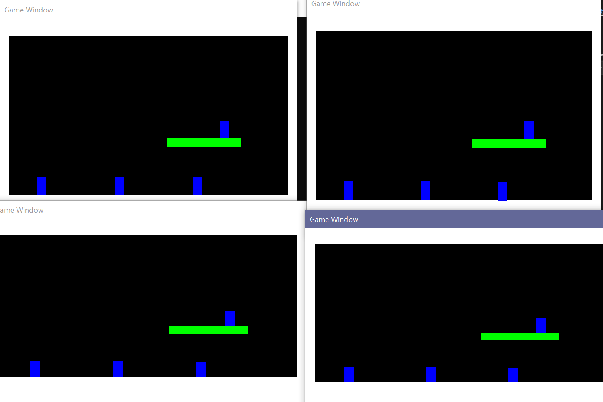
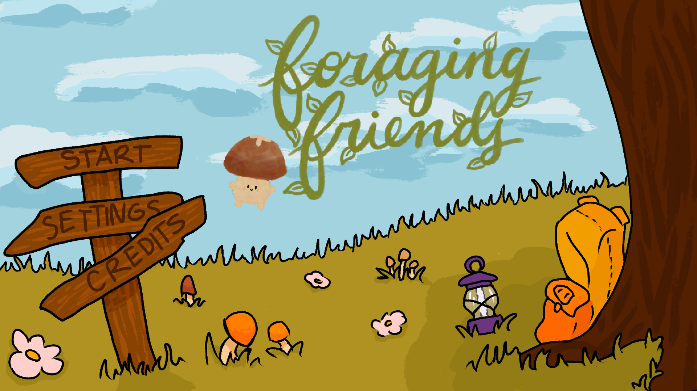
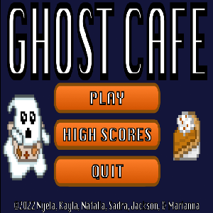
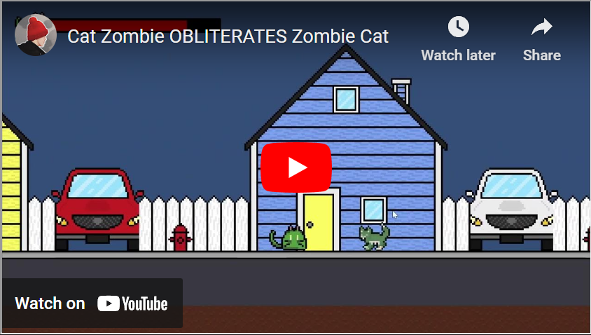
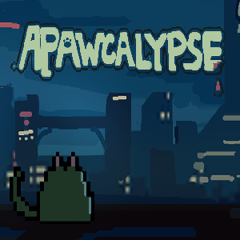
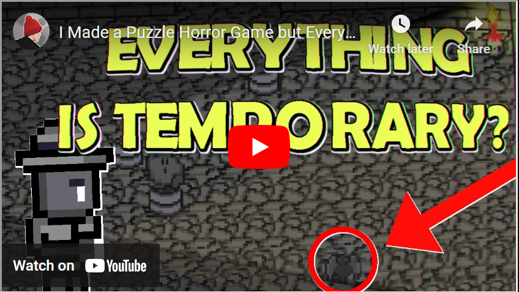
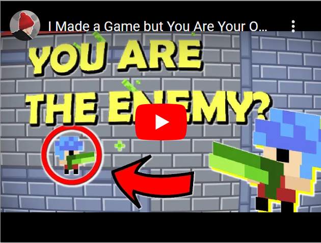
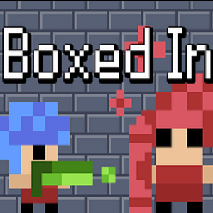

Current Projects
C++ Game Engine

I am creating a 2D game engine using C++ as a semester long project for a game engines course at NCSU.
Allows the creation of 2D platformer games using SFML libraries for displaying visuals.
Worked with 0mq to add multiplayer capabilities to the game engine using a server and clients.
Foraging Friends

I am working with 10 other NCSU students to create a game using Unreal Engine. I am a programmer for the game.
The goal is to have the game playable by the end of the year!
Home
Ghost Cafe

Created a fall themed game about serving ghosts in a cafe! Cooperated in a team of 6 to develop a fall themed ghost café game.
I created the player mechanics, and the game manager by combining the different parts made by the other developers and artists. This
game was creating in Unity.
Home
Apawcalypse

This game was created over the span of 2 days in a group of four. We used Unity to create the game.
I created the movement mechanics, like the walk, jump, and dash. I also created the effects that occur when an enemy is killed, which
looks very brutal, but in my opinion, makes the game much more fun.

Home
Dark

This game was a solo project created over the span of a weekend. The project theme was 'Noir' with a limation of 'everything is temporary'.
I decided to make a puzzle game with the main mechanic being the interactions between the flashlight and other objects. Things in the dark, change.

Home
Ninja Dog

This was my first video game project. I downloaded Unity and I decided that I wanted to make a bossfight.
I decided on my idea: Ninja Dog. In this short game you fight Oni Bunny, the main villian of the game. I learned
lots of stuff about game development when making this.
Home
Boxed In

This game was created over the span of a weekend for my very first game jam. I spent tons of time creating it, and
made tons of mistakes. Luckily, I have been able to learn from those mistakes and I can now make an even better game!
